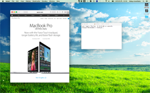

Download
Precompiled and ZIP'ed (freeware)
for Mac OS X 10.9 or later
How to Run
-
Unzip the downloaded zip file.
-
Right click on the app icon, then select "Open",
if you encounter some security error when double-clicking
the app when running it.
-
To change the background selection,
click on the app icon located on the status bar
at the top of the screen, and make your choice
from the list of bundled backgrounds.
You can also select a background you created by yourself.
How to Create a New Dynamic Background

HTML5 is the mean to implement dynamic backgrounds for viiw.
What you need to prepare is an HTML page locally on your Mac.
It can be made to react mouse move events if you wish
(the system propagates the mouse move event only).
Once created, you can specify yor own background
by clicking the app icon on the status bar at the top of the screen,
and choosing "Select..." from the drop-down menu.
As implementation examples, please check out the source code
for the bundled bakcgrounds found at
this GitHub page.
GitHub
View on GitHub ,
Download ZIP'ed Repository
Acknowledgements
Thank you for all the authors who kindly shared their precious art work under very flexible
licensing terms.
-
"green field" — the original image is by
Luxt Design, under the license:


-
"criff view" — the original image is by
Christopher Combe Photography, under:


-
"colored ginkgo" — the original image is obtained from
this page
and is public domain.
-
"trees lining" — the original image is obtained from
this page
and is public domain.
-
"illumination" — the movie clip is a modified version of
this movie clip by @_@.
-
"calm ocean" — the movie clip is a caputure of a modified version of
this three.js example.
-
"waves" — a copy of
this three.js example.
In order to achieve 3D effect and such, all the materials (except "waves") are modified, and visual quality became worse unfortunately.
Please check out the originals if you'd like to enjoy the quality.